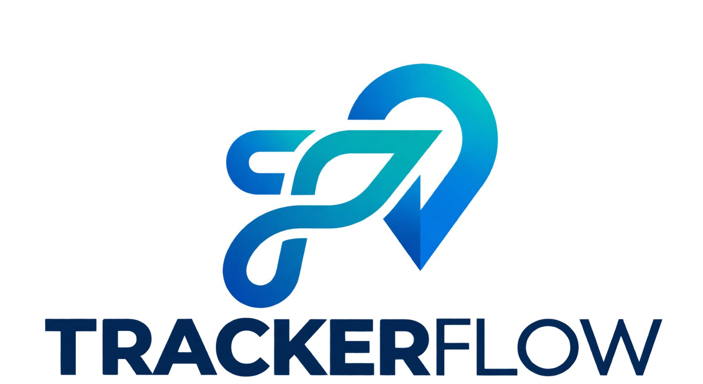

PRESENCIA DIGITAL
↗Páginas web
Para explicar lo que haces y facilitar que te contacten.

Hablemos por WhatsApp ↗Tecnología útil para negocios reales
Ayudamos a emprendimientos, pequeños negocios y pymes a mejorar su presencia digital y simplificar tareas con soluciones prácticas apoyadas por IA.
Para explicar lo que haces y facilitar que te contacten.
Para reducir pasos repetitivos y ordenar mejor tus proyectos.
01 / LO QUE HACEMOS
Sin soluciones sobredimensionadas. Partimos por el problema real y construimos algo claro, útil y posible de mantener.
PÁGINAS WEB
Creamos landing pages y sitios informativos para presentar tus servicios, generar confianza y convertir visitas en consultas.
AUTOMATIZACIÓN
Revisamos tu forma de trabajar y automatizamos pasos simples usando herramientas digitales e IA cuando realmente aporta valor.
02 / PARA QUIÉN
Nos enfocamos en emprendimientos, profesionales independientes, pequeños negocios y pymes que necesitan dar un siguiente paso digital sin sumar complejidad innecesaria.
¿Es para mí? Hablemos ↗Que necesitan presentar una idea o validar un servicio.
Que quieren mostrar su trabajo y recibir consultas.
Que buscan ordenar su presencia y sus tareas diarias.
Que necesitan procesos más simples y conectados.
03 / POR QUÉ UNA WEB
Tu sitio se convierte en un punto de llegada para búsquedas, recomendaciones y redes sociales.
Explicas qué haces, a quién ayudas y cómo pueden trabajar contigo, sin depender de mensajes repetidos.
Una presencia cuidada ayuda a que tu negocio se vea activo, profesional y fácil de contactar.
04 / CÓMO TRABAJAMOS
Definimos un alcance realista desde el comienzo y avanzamos contigo en cada etapa.
Conversamos sobre tu negocio, la necesidad y el resultado que esperas.
Te presentamos una solución acotada, con entregables y tiempos claros.
Desarrollamos, revisamos contigo y dejamos todo listo para usar.
Partamos por una conversación
Cuéntanos brevemente qué necesitas. Te diremos con honestidad si podemos ayudarte y cuál sería el siguiente paso.
También puedes llamarnos o escribirnos al +56 9 4005 3245